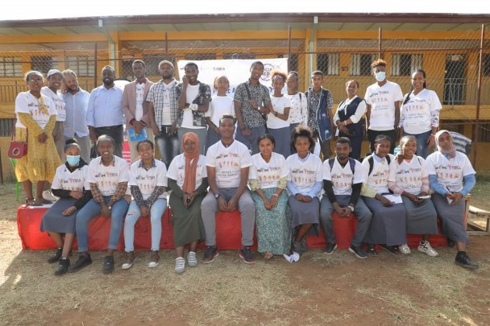
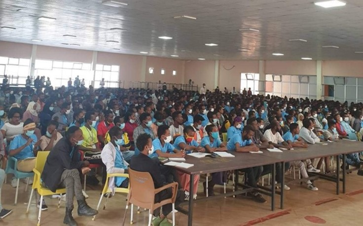
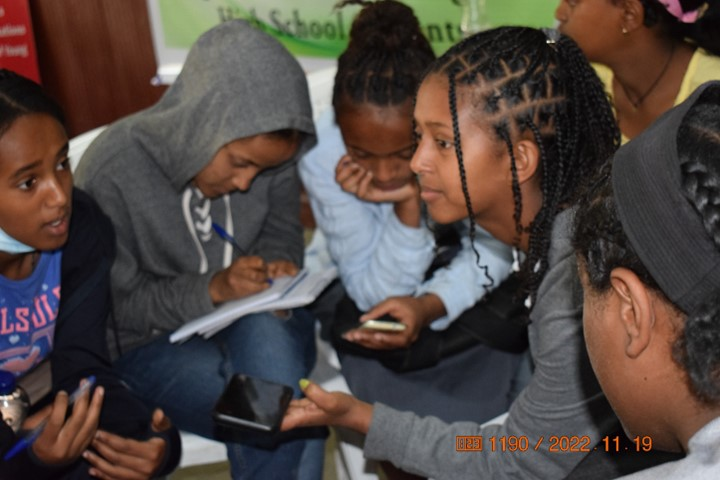
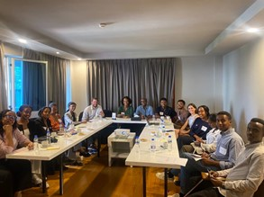
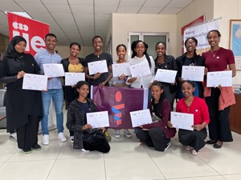
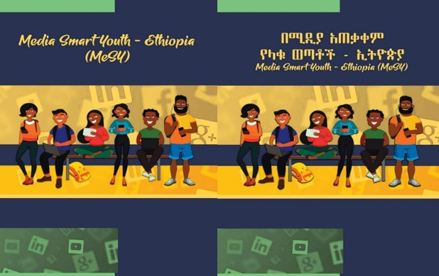

Discover our comprehensive media literacy initiatives designed to empower Ethiopian youth

A collaborative initiative jointly implemented by four MeSY member organizations to integrate media literacy with conflict resolution and dialogue. This project demonstrates MIL's practical application beyond theory, using it as a direct tool to counter hate speech and promote peaceful coexistence among youth in conflict-affected communities.

MeSY members, in partnership with the Ministry of Peace and VSO, integrated a comprehensive media literacy module into the national curriculum. This systemic integration has equipped over 50,000 youth volunteers with essential critical thinking and digital literacy skills, massively amplifying our reach and embedding MIL into the fabric of national youth service.

Advancing Media Literacy and Digital Solutions for Improved Adolescent and Youth Sexual and Reproductive Health, in partnership with Icog-ACC and YMCA. This initiative empowers young people to identify and counter health misinformation online, improving access to high-quality, reliable information and services through targeted social media campaigns and offline activities.

In collaboration with the Center for Information Resilience (CIR), we are co-creating a training toolkit to combat Technology-Facilitated Gender-Based Violence (TFGBV). This project is directly informed by CIR's groundbreaking research into the specific patterns and impacts of TFGBV within the Ethiopian context. It addresses a critical gap in youth protection online.

A formal body of young leaders who guide MeSY's strategy, program development, and innovation. The YAP ensures all MeSY initiatives are youth-relevant and youth-led. It serves as a model for genuine youth participation, providing members with high-level leadership experience, training, and a platform to shape the national conversation on MIL.

Developing and publishing our own original training materials in 4+ local languages to ensure accessibility and inclusivity. We consistently deliver MIL trainings to diverse youth groups across communities and have participated in global conversations by taking part in World Media Literacy Week, solidifying our role in the international MIL community.